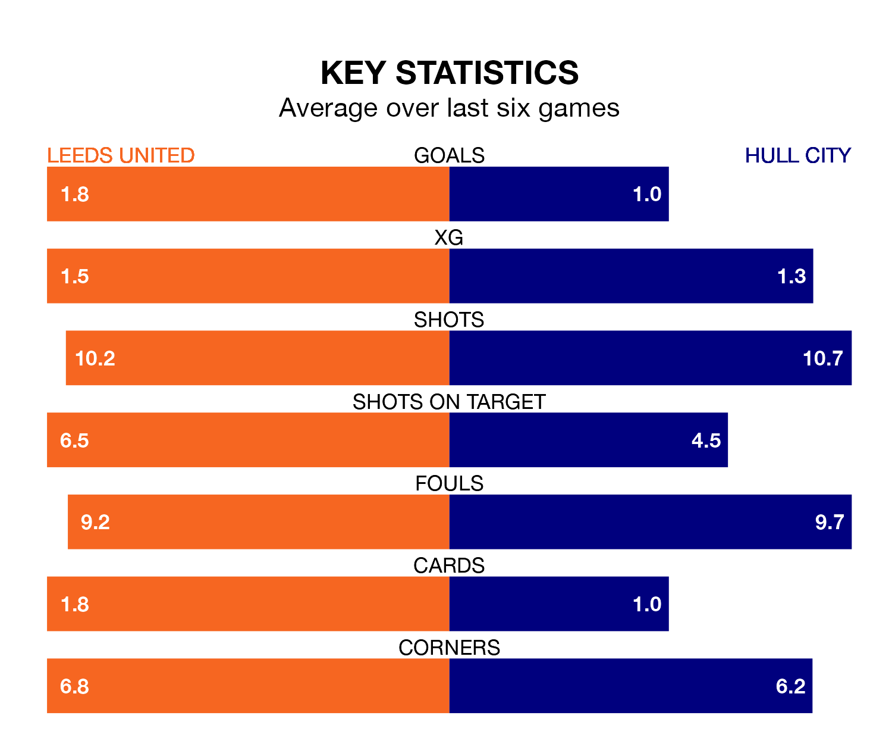

Leeds United are heavy favourites to keep all three points at home in Monday's late kick-off against Hull City.
Leeds, who sit second in EFL Championship with 39 games played, are priced at 1.4 to seal victory at Elland Road.
Sitting seven places and 25 points behind them in the table, Hull are 6.5 to win with *Betting Company*, while the draw is at 4.5.
With 72 goals in 39 games so far this season, Leeds are scoring more than average in the league with 1.8 goals per game. And they are conceding fewer than average, letting in 30 goals at a rate of 0.8 per game.
Hull, meanwhile, are average scorers, with 1.4 goals per game. They have conceded 1.3 goals per game.
With Illan Meslier between the sticks, United can rely on one of the league's safest pair of hands. He has kept 17 clean sheets in his 37 appearances this season, and no 'keeper has prevented the opposition scoring more often in EFL Championship.
In City's net, Ryan Allsop has eight clean sheets in 29 games. He has conceded a goal every 84 minutes, 60% more often than the 132 minutes between goals for Meslier.
In the last 10 years, Leeds and Hull have played each other on 10 occasions. Leeds won five of them, Hull one, and they drew four times.
On average, Leeds scored 1.3 goals and the Tigers 0.6 in those matches.
Their last meeting was on September 20, when they played out a 0-0 draw.
The hosts are in good form in EFL Championship, with four wins and two draws from their last six games.
With a win and four draws over that period, the Tigers' form is much worse – they have taken seven points from 18, compared to Leeds's 14.
Leeds's last match was on Friday, a 2-2 draw against Watford, with Crysencio Summerville and Mateo Joseph getting the goals for Leeds.
Hull lost 2-0 against Stoke City last time out, also on Friday.
Monday's match will be refereed by Joshua Smith, who has taken charge of 22 EFL Championship games so far this season, issuing four red cards and booking 85 players. He has awarded three penalties.
The last Leeds game Smith refereed was a 2-1 away loss to Preston North End on December 26. He is yet to oversee a match featuring Hull this season.
Updated: 10:31 (UTC), 31/03/24